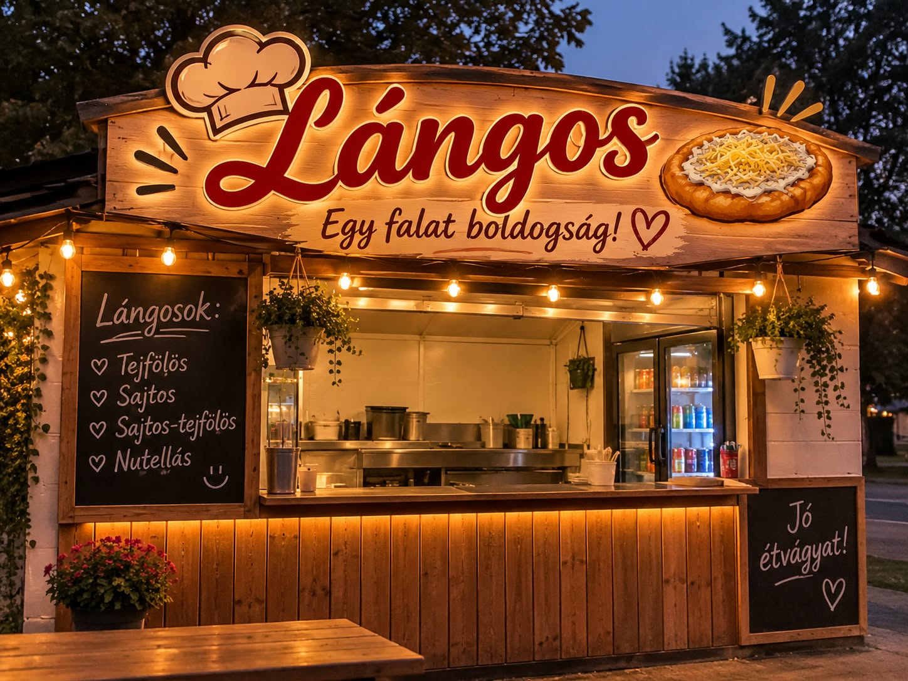
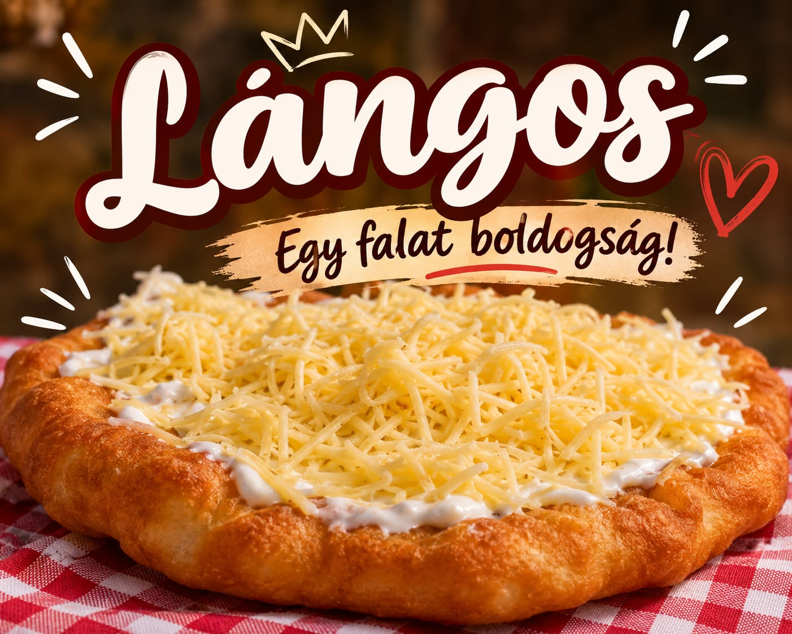

Mentes falat története
Minden egy közös nyári emlékkel és egy közös problémával kezdődött. Két alapítónk közül az egyik glutén, a másik pedig laktózérzékeny, így évekig csak távolról nézhették, ahogy mások jóízűen falatozzák a frissen sült, fokhagymás-tejfölös lángost a strandon vagy a piacon.
Elegünk lett abból, hogy mindig le kell mondanunk a kedvenc nyári ízeinkről, vagy különcként kell kezelnünk magunkat egy baráti összejövetelen. Ezért hoztuk létre a Mentes Falat lángosozót: egy olyan helyet, ahol kompromisszumok nélkül, 100%-ban glutén és laktózmentes alapanyagokból sütjük a ropogós, mégis puha lángosokat. Nálunk senkinek sem kell kimaradnia az élményből!
Nyitvatartás & Elérhetőség
- Hétfő – Péntek: 8:00 - 18:00
- Szombat – Vasárnap: 9:00 - 20:00
- Telefon szám: +06060606


Ne maradj le a Mentes Falat újdonságairól!
Újdonságok ért iratkozz fel a Mentes lángosra hogy minné elöbb értesülj!